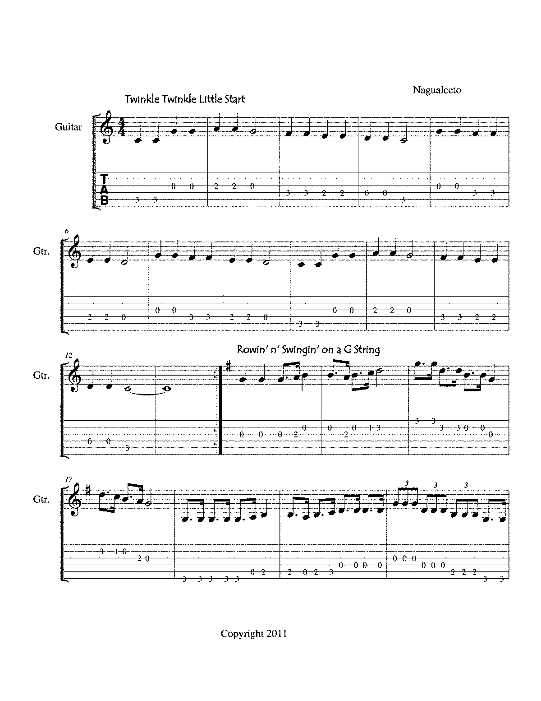

Welcome to Week 1: Twinkle Twinkle Little Star
This week we’ll be analyzing the melody of "Twinkle Twinkle Little Star". You’ll get a closer look at the song's structure, rhythm, and key musical features. We’ll break down the melody, identifying intervals, patterns, and the overall structure.
Song Overview
"Twinkle Twinkle Little Star" is a classic children’s nursery rhyme. Its melody is simple and repetitive, making it an excellent piece for analysis. We’ll start by looking at the musical notation for the song:
Song Analysis
The song follows a simple melody that repeats every few phrases. It is in the key of C major and uses a 4/4 time signature. The notes in the melody are primarily stepwise, meaning the melody moves by intervals of seconds, with occasional larger leaps.
Interactive Task for This Week:
For your task, you’ll analyze the song’s melody using MuseScore or Sonic Visualiser, marking out the intervals and identifying the key features of the melody. Try transcribing the melody using the software and comparing it with the original score.
Assignment: Download the sheet music and analysis template for "Twinkle Twinkle Little Star" from the link below. Complete the task and submit your work by the end of the week.